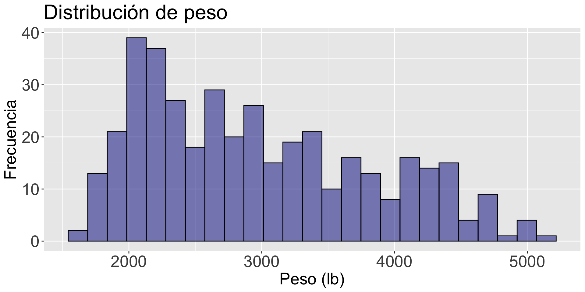
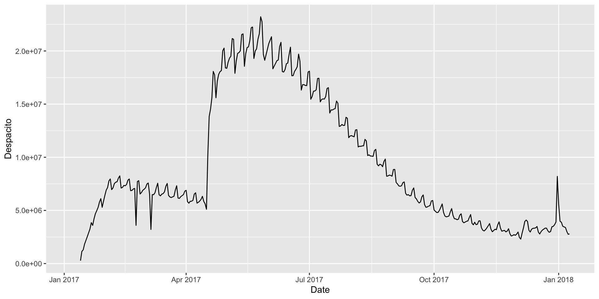
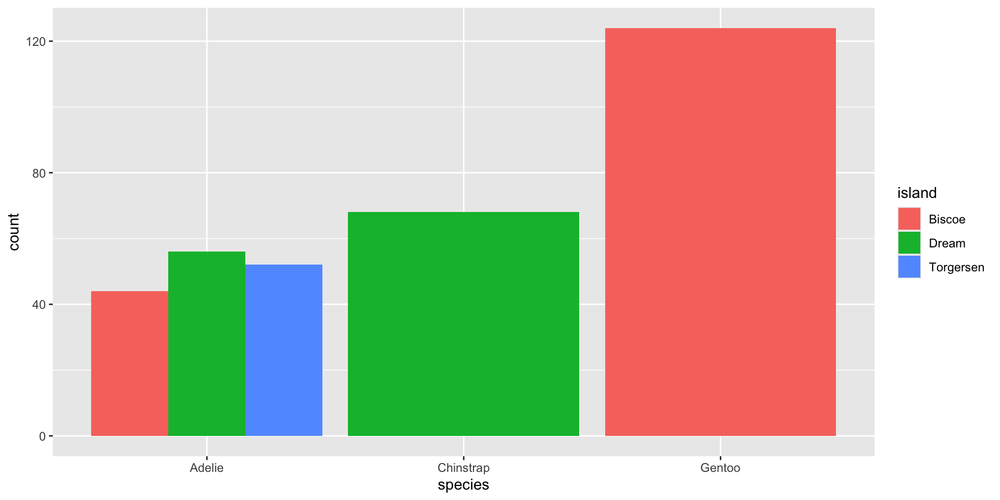
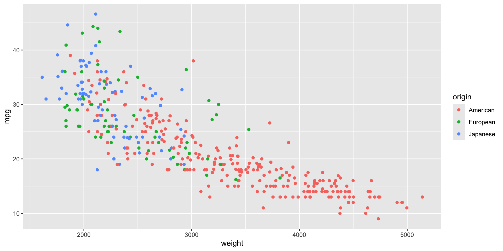

Carguémos las librerías readxl, ggplot2, ggformula, y plotly en Google Colab y R antes de comenzar.
# Nos se te olvide instalar la librería "ggformula" en Google Colab.# install.packages("ggformula")library(readxl)library(ggplot2)library(ggformula)library(plotly)
Una nueva librería
Hoy, utilizaremos una librería llamada dplyr para generar resúmenes estadísticos cuando tenemos más de una variable.
La librería dplyr es una herramienta para manipular y transformar datos.
Es parte del tidyverse.
Cárgala en Google Colab con el siguiente código.
library(dplyr)
Datos multivariados
Los datos multivariados son conjunto de datos que contienen observaciones de dos o más variables.
Las variables pueden ser numéricas o categóricas.
Las variables pueden o no depender las unas de las otras.
De hecho, el objetivo es establecer si hay alguna relación entre las variables, así como el tipo de relación.
Ejemplo
Consideremos datos de 392 autos sobre sus millas por galón, número de cilindros, caballos de fuerza, peso, aceleración, año, origen, entre otras variables.
Los datos están en el archivo “auto_dataset.xlsx”.
auto_data =read_excel("auto_dataset.xlsx") # Leer los datos.head(auto_data) # Ver las primeras 6 observaciones.
# A tibble: 6 × 9
mpg cylinders displacement horsepower weight acceleration year origin
<dbl> <dbl> <dbl> <chr> <dbl> <dbl> <dbl> <chr>
1 18 8 307 130 3504 12 70 American
2 15 8 350 165 3693 11.5 70 American
3 18 8 318 150 3436 11 70 American
4 16 8 304 150 3433 12 70 American
5 17 8 302 140 3449 10.5 70 American
6 15 8 429 198 4341 10 70 American
# ℹ 1 more variable: `car name` <chr>
Principio 1
En el contexto de datos de múltiples variables, las preguntas típicas a estudiar son:
¿Cómo se relacionan entre sí la variable \(X\) y la variable \(Y\)?
¿Es la distribución de la variable \(X\) la misma en todos los subgrupos definidos por la variable \(Z\)?
¿Hay alguna observación inusual en la combinación de valores de las variables \(X\) y \(Y\)?
¿Hay alguna observación inusual en \(X\) para un subgrupo de la variable \(Z\)?
Tipos de gráficas
Existen varios tipos de gráficas que nos ayudan a explorar relaciones entre dos o más variables.
Tipo
Gráfica
Numéricas
Gráfico de dispersión, gráfico de lineas
Categóricas
Gráfico de barras lado a lado, gráfico de barras apiladas, gráfico de mosaico
Mixta
Curvas de densidad superpuestas, diagramas de caja uno al lado del otro, gráficas de contorno
Dos variables numéricas
Variable independiente y dependiente
Cuando investigamos la relación entre dos variables (numéricas o categóricas), tenemos una nomenclatura específica para cada una de ellas.
Llamamos a una variable como la variable dependiente o de respuesta. A ella la denotamos con el símbolo \(Y\).
La otra variable la llamamos variable independendiente o predictor. A ella la denotamos con el símbolo \(X\).
Nuestro objetivo es saber si cambios en la variable \(X\) están asociados a cambios en la variable \(Y\), y el tipo de asociación.
Gráfica de dispersión
La gráfica mas común para examinar la relación entre dos variables numéricas es la gráfica de dispersión.
Las variables \(X\) y \(Y\) se colocan en el eje horizontal y vertical, respectivamente. Cada punto en la gráfica marca la posición de un par de valores de \(X\) y \(Y\).
Con los diagramas de dispersión, buscamos relaciones lineales y no lineales, y examinamos el nivel de las relaciones.
Para construir gráficas de dispersión, usamos la función gf_point(Y ~ X, data = data_set).
Por ejemplo, construyamos una gráfica para explorar la relación entre el peso de un auto (weight) y sus rendimiento en millas por galón (mpg)
gf_point(mpg ~ weight, data = auto_data)
gf_point(mpg ~ weight, data = auto_data)
Aplicando el principio 3
Siguiendo el principio 3, podemos cambiar los valores pre-establecidos de la función para definir colores o formas diferentes de los puntos de la gráfica.
Específicamente, puedes cambiar el color, la forma, y el tamaño de los puntos usando los argumentos color, shape y size, respectivamente.
gf_point(Y ~ X, data = data_set, color, shape, size)
gf_point(mpg ~ weight, data = auto_data, color ="blue", shape =4, size =5)
Posibles formas de los puntos
Siguiendo con el principio 3, puedes usar funciones antes vistas para mejorar aún más la apariencia del gráfico.
Code
mi_diagrama <-gf_point(mpg ~ weight, data = auto_data, color ="darkblue", size =2) +labs(title ="Relación de peso y millas por galón en autos", x ="Peso (lb)", y ="Millas por galón")mi_diagrama <- mi_diagrama +theme(axis.text=element_text(size=20), axis.title=element_text(size=20),plot.title=element_text(size=25))ggplotly(mi_diagrama)
Incluir el cero
En la gráfica anterior, el valor mínimo del eje vertical está alrededor de 10. Para ajustar el valor mínimo en ese eje a 0 usamos el comando adicional mostrado abajo.
Las gráficas individuales de variables ( como el histograma) no permiten estudiar la relación entre dos variables. Solo dan información de la distribución cada variable.
Code
histogram_mpg <-gf_histogram( ~ mpg, data = auto_data, fill ="darkblue", color ="black") histogram_mpg <- histogram_mpg +labs(title ="Distribución de milas por galón", x ="Millas por galón", y ="Frecuencia")histogram_mpg <- histogram_mpg +theme(axis.text=element_text(size=20), axis.title=element_text(size=20),plot.title=element_text(size=25))histogram_mpg

Code
histogram_weight <-gf_histogram( ~ weight, data = auto_data, fill ="darkblue", color ="black") histogram_weight <- histogram_weight +labs(title ="Distribución de peso", x ="Peso (lb)", y ="Frecuencia")histogram_weight <- histogram_weight +theme(axis.text=element_text(size=20), axis.title=element_text(size=20), plot.title=element_text(size=25))histogram_weight
Una variable categórica y una numérica
!Divide los datos en grupos!
Para examinar la relación entre una variable numérica y una categórica, usamos la variable categórica para dividir los datos en grupos. Así comparamos la distribución de la variable numérica entre estos grupos.
En este contexto:
\(X\) es la variable categórica.
\(Y\) es la variable numérica.
La gráfica de cajas lado al lado es la más efectiva para estudiar la relación entre una variable categórica y una numérica.
Gráfica de cajas por grupos
La gráfica de cajas lado a lado compara la distribución de una variable en diferentes grupos.
La gráfica se obtiene con la función gf_boxplot(Y ~ X, data = dataset).
gf_boxplot(mpg ~ origin, data = auto_data)

Mejorando la gráfica
Code
bp_mpg_by_origin <-gf_boxplot(mpg ~ origin, data = auto_data, fill ="lightblue", color ="black") bp_mpg_by_origin <- bp_mpg_by_origin +labs(y ="Millas por galón", x ="Origen")bp_mpg_by_origin <- bp_mpg_by_origin +theme(axis.text=element_text(size=20), axis.title=element_text(size=20))ggplotly(bp_mpg_by_origin)
También podemos cambiar el formato de los puntos atípicos usando los argumentos outlier.color, outlier.shape, y outlier.size.
Code
bp_mpg_by_origin <-gf_boxplot(mpg ~ origin, data = auto_data, fill ="lightblue", color ="black", outlier.color ="red",outlier.shape =4, outlier.size =4) bp_mpg_by_origin <- bp_mpg_by_origin +labs(y ="Millas por galón", x ="Origen")bp_mpg_by_origin <- bp_mpg_by_origin +theme(axis.text=element_text(size=20), axis.title=element_text(size=20))bp_mpg_by_origin
Resúmenes estadísticos
En muchos casos, es útil calcular resúmenes estadísticos de la variable numérica \(Y\) para cada categórica de la variable categórica \(X\).
Para hacer esto, usamos la librería library(dplyr).
Aquí usaremos dos de sus funciones más útiles, group_by() y summarize(), para agrupar y resumir datos.
Las funciones se usan con una sintaxis especial que usa el operador %>% para indicar el orden entre las operaciones.
# A tibble: 3 × 4
origin mean max min
<chr> <dbl> <dbl> <dbl>
1 American 20.1 39 9
2 European 27.9 44.3 16.2
3 Japanese 30.5 46.6 18
Puedes guardar la tabla en un nuevo objeto y usar las mismas funciones de antes para visualizar los resúmenes estadísticos en lugar de los datos originales.
La gráfica de barras lado al lado se genera con la función gf_bar(), asignando la variable \(X\) al argumento fill. El nombre de la variable debe de estar precedido por una tilde ~X.
Por ejemplo, para estudiar la distribución de las especies de pingüinos en las tres diferentes islas usamos lo siguiente:
gf_bar( ~ species, data = penguins_data, fill =~island)
La gráfica muestra la frecuencia de cada especie, separada por el nombre de la isla.
gf_bar( ~ species, data = penguins_data, fill =~island)

Gráfica de barras lado a lado
Una alternativa a la gráfica anterior es poner las barras lado al lado para las categorías de la variable \(X\).
En este caso, se usan los mismos comandos con un argumento extra: position = position_dodge().
gf_bar( ~ species, data = penguins_data, fill =~island, position =position_dodge())
gf_bar( ~ species, data = penguins_data, fill =~island, position =position_dodge())

¿Apiladas o lado a lado?
La principal diferencia entre los gráficos de barras apiladas y de lado a lado es que el gráfico de lado a lado muestra los valores en barras separadas dentro de una categoría.
Ventajas de barras apiladas:
Es más fácil entender qué proporciones de un todo se dividen entre segmentos.
Agrega visualmente cada proporción.
Ventajas de barras lado a lado:
Es más fácil comparar las alturas de cada entidad individual.
Mejor para comparar entre grupos.
Resúmenes estadísticos
Para variables categóricas, los resúmenes estadísticos más comunes son la frecuencia y la frecuencia relativa.
Este código muestra como calcular la frecuencia (n) y la frecuencia relativa (Proporción) usando funciones de la librería dplyr.
# A tibble: 5 × 4
# Groups: island [3]
island species n Proporción
<fct> <fct> <int> <dbl>
1 Biscoe Adelie 44 0.262
2 Biscoe Gentoo 124 0.738
3 Dream Adelie 56 0.452
4 Dream Chinstrap 68 0.548
5 Torgersen Adelie 52 1
Más de una variable
Gráficas para tres variables
Cuando examinamos una distribución o relación, a menudo queremos compararla entre subgrupos de datos.
Este proceso de condicionamiento sobre variables adicionales conduce a visualizaciones que involucran tres o más variables.
Aquí explicamos cómo crear gráficas para visualizar múltiples variables.
Gráfica de dispersión por color
Para dos variables numéricas y una categórica.
my_scatter =gf_point(mpg ~ weight, color =~origin, data = auto_data) ggplotly(my_scatter)
Gráfica de facetas o enrejado
La gráfica de facetas visualiza la relación o distribución de una o dos variables para cada subgrupo definido por una tercera variable \(Z\).
Idea: Crear una gráfica para cada subgrupo de \(Z\).
Para hacer la gráfica, usa la función gf_facet_grid con la sintaxis %>% de dplyr.
gf_point(mpg ~ weight, data = auto_data) %>%gf_facet_grid(origin ~ .)
La función produce una rejilla con 1 columna y 3 filas de gráficas. Cada fila acomoda una categoría de origin.
gf_point(mpg ~ weight, data = auto_data) %>%gf_facet_grid(origin ~ .)
Si cambiamos el orden de la variable origin en la función gf_facet_grid, obtenemos una rejilla de gráficas con tres columnas y una fila de gráficas.
my_facet =gf_point(mpg ~ weight, data = auto_data) %>%gf_facet_grid( ~ origin)ggplotly(my_facet)
Gráficas para cuatro variables
Una gráfica común para 4 variables es la gráfica de dispersión, donde el color y el tamaño de los símbolos dependen de dos variables adicionales categóricas.
gf_point(bill_length_mm ~ bill_depth_mm, size =~island, color =~species, data = penguins_data)